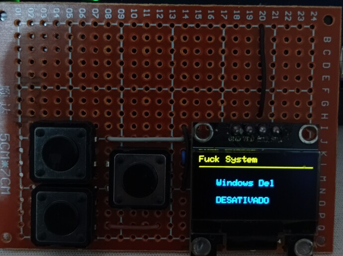
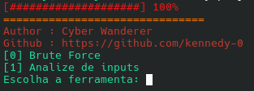
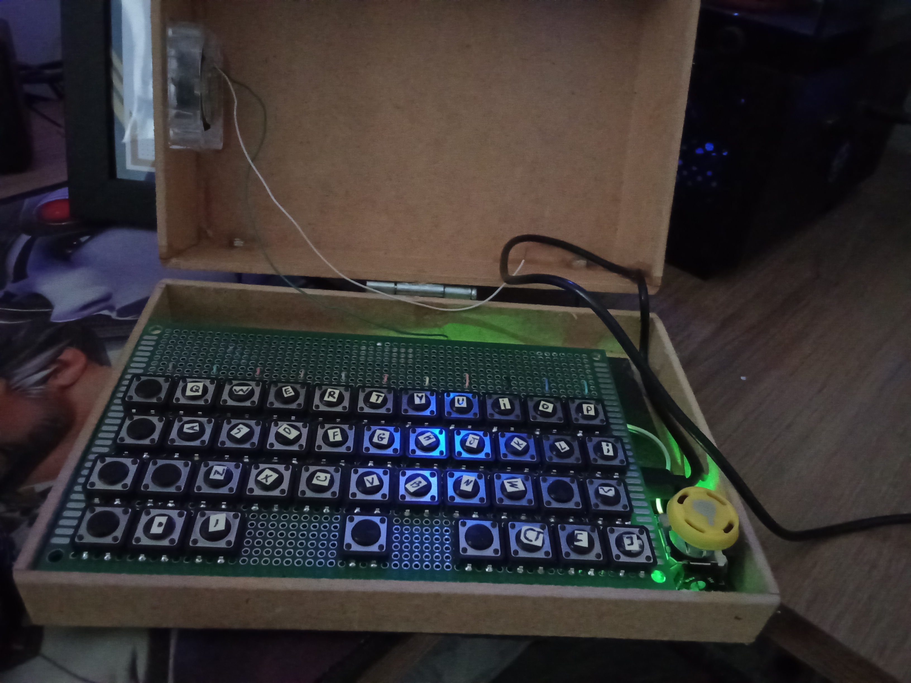

O KeyDeck é um dispositivo desenvolvido com RP2040 que utiliza a funcionalidade USB HID para simular um teclado conectado ao computador. O projeto possui uma interface própria com display OLED e botões físicos, permitindo navegar por um menu e executar diferentes funções programadas.

Projeto desenvolvido em Python para estudo de automação de testes de autenticação utilizando Selenium. A aplicação automatiza a interação com um formulário de login em um ambiente autorizado, permitindo testar diferentes entradas e validar o comportamento do sistema. O projeto começou como um experimento em Python utilizando Selenium, com o objetivo de estudar automação de páginas web e interação com formulários de login em um ambiente autorizado.

Cyber Deck é um computador portátil desenvolvido do zero, inspirado no livro Neuromancer. O projeto integra hardware e software em uma plataforma personalizada para programação, automação e administração de sistemas. Atualmente, está na fase de configuração do sistema operacional.